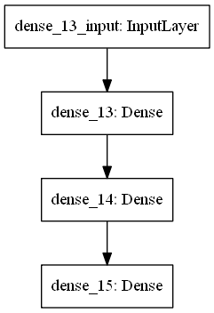

使用Keres MNIST Fashion辨識穿著¶
import tensorflow as tf
import numpy as np
import matplotlib.pyplot as plt
from keras.utils import np_utils
---------------------------------------------------------------------------
ImportError Traceback (most recent call last)
c:\users\怡樺\hellodjango\lib\site-packages\tensorflow\python\pywrap_tensorflow.py in swig_import_helper()
17 try:
---> 18 fp, pathname, description = imp.find_module('_pywrap_tensorflow', [dirname(__file__)])
19 except ImportError:
~\AppData\Local\Programs\Python\Python36-32\lib\imp.py in find_module(name, path)
296 else:
--> 297 raise ImportError(_ERR_MSG.format(name), name=name)
298
ImportError: No module named '_pywrap_tensorflow'
During handling of the above exception, another exception occurred:
ModuleNotFoundError Traceback (most recent call last)
c:\users\怡樺\hellodjango\lib\site-packages\tensorflow\python\__init__.py in <module>
65 # use `dlopen()` for dynamic loading.
---> 66 from tensorflow.python import pywrap_tensorflow
67 except ImportError:
c:\users\怡樺\hellodjango\lib\site-packages\tensorflow\python\pywrap_tensorflow.py in <module>
27 return _mod
---> 28 _pywrap_tensorflow = swig_import_helper()
29 del swig_import_helper
c:\users\怡樺\hellodjango\lib\site-packages\tensorflow\python\pywrap_tensorflow.py in swig_import_helper()
19 except ImportError:
---> 20 import _pywrap_tensorflow
21 return _pywrap_tensorflow
ModuleNotFoundError: No module named '_pywrap_tensorflow'
During handling of the above exception, another exception occurred:
ImportError Traceback (most recent call last)
<ipython-input-1-392282ad3d40> in <module>
----> 1 import tensorflow as tf
2 import numpy as np
3 import matplotlib.pyplot as plt
4 from keras.utils import np_utils
c:\users\怡樺\hellodjango\lib\site-packages\tensorflow\__init__.py in <module>
22
23 # pylint: disable=wildcard-import
---> 24 from tensorflow.python import *
25 # pylint: enable=wildcard-import
26
c:\users\怡樺\hellodjango\lib\site-packages\tensorflow\python\__init__.py in <module>
70 for some common reasons and solutions. Include the entire stack trace
71 above this error message when asking for help.""" % traceback.format_exc()
---> 72 raise ImportError(msg)
73
74 # Protocol buffers
ImportError: Traceback (most recent call last):
File "c:\users\怡樺\hellodjango\lib\site-packages\tensorflow\python\pywrap_tensorflow.py", line 18, in swig_import_helper
fp, pathname, description = imp.find_module('_pywrap_tensorflow', [dirname(__file__)])
File "C:\Users\怡樺\AppData\Local\Programs\Python\Python36-32\lib\imp.py", line 297, in find_module
raise ImportError(_ERR_MSG.format(name), name=name)
ImportError: No module named '_pywrap_tensorflow'
During handling of the above exception, another exception occurred:
Traceback (most recent call last):
File "c:\users\怡樺\hellodjango\lib\site-packages\tensorflow\python\__init__.py", line 66, in <module>
from tensorflow.python import pywrap_tensorflow
File "c:\users\怡樺\hellodjango\lib\site-packages\tensorflow\python\pywrap_tensorflow.py", line 28, in <module>
_pywrap_tensorflow = swig_import_helper()
File "c:\users\怡樺\hellodjango\lib\site-packages\tensorflow\python\pywrap_tensorflow.py", line 20, in swig_import_helper
import _pywrap_tensorflow
ModuleNotFoundError: No module named '_pywrap_tensorflow'
Failed to load the native TensorFlow runtime.
See https://github.com/tensorflow/tensorflow/blob/master/tensorflow/g3doc/get_started/os_setup.md#import_error
for some common reasons and solutions. Include the entire stack trace
above this error message when asking for help.
(x_train,y_train),(x_test,y_test) = tf.keras.datasets.fashion_mnist.load_data()
x_train.shape,y_test.shape,x_test.shape,y_test.shape
((60000, 28, 28), (10000,), (10000, 28, 28), (10000,))
x_train[0]
array([[ 0, 0, 0, 0, 0, 0, 0, 0, 0, 0, 0, 0, 0,
0, 0, 0, 0, 0, 0, 0, 0, 0, 0, 0, 0, 0,
0, 0],
[ 0, 0, 0, 0, 0, 0, 0, 0, 0, 0, 0, 0, 0,
0, 0, 0, 0, 0, 0, 0, 0, 0, 0, 0, 0, 0,
0, 0],
[ 0, 0, 0, 0, 0, 0, 0, 0, 0, 0, 0, 0, 0,
0, 0, 0, 0, 0, 0, 0, 0, 0, 0, 0, 0, 0,
0, 0],
[ 0, 0, 0, 0, 0, 0, 0, 0, 0, 0, 0, 0, 1,
0, 0, 13, 73, 0, 0, 1, 4, 0, 0, 0, 0, 1,
1, 0],
[ 0, 0, 0, 0, 0, 0, 0, 0, 0, 0, 0, 0, 3,
0, 36, 136, 127, 62, 54, 0, 0, 0, 1, 3, 4, 0,
0, 3],
[ 0, 0, 0, 0, 0, 0, 0, 0, 0, 0, 0, 0, 6,
0, 102, 204, 176, 134, 144, 123, 23, 0, 0, 0, 0, 12,
10, 0],
[ 0, 0, 0, 0, 0, 0, 0, 0, 0, 0, 0, 0, 0,
0, 155, 236, 207, 178, 107, 156, 161, 109, 64, 23, 77, 130,
72, 15],
[ 0, 0, 0, 0, 0, 0, 0, 0, 0, 0, 0, 1, 0,
69, 207, 223, 218, 216, 216, 163, 127, 121, 122, 146, 141, 88,
172, 66],
[ 0, 0, 0, 0, 0, 0, 0, 0, 0, 1, 1, 1, 0,
200, 232, 232, 233, 229, 223, 223, 215, 213, 164, 127, 123, 196,
229, 0],
[ 0, 0, 0, 0, 0, 0, 0, 0, 0, 0, 0, 0, 0,
183, 225, 216, 223, 228, 235, 227, 224, 222, 224, 221, 223, 245,
173, 0],
[ 0, 0, 0, 0, 0, 0, 0, 0, 0, 0, 0, 0, 0,
193, 228, 218, 213, 198, 180, 212, 210, 211, 213, 223, 220, 243,
202, 0],
[ 0, 0, 0, 0, 0, 0, 0, 0, 0, 1, 3, 0, 12,
219, 220, 212, 218, 192, 169, 227, 208, 218, 224, 212, 226, 197,
209, 52],
[ 0, 0, 0, 0, 0, 0, 0, 0, 0, 0, 6, 0, 99,
244, 222, 220, 218, 203, 198, 221, 215, 213, 222, 220, 245, 119,
167, 56],
[ 0, 0, 0, 0, 0, 0, 0, 0, 0, 4, 0, 0, 55,
236, 228, 230, 228, 240, 232, 213, 218, 223, 234, 217, 217, 209,
92, 0],
[ 0, 0, 1, 4, 6, 7, 2, 0, 0, 0, 0, 0, 237,
226, 217, 223, 222, 219, 222, 221, 216, 223, 229, 215, 218, 255,
77, 0],
[ 0, 3, 0, 0, 0, 0, 0, 0, 0, 62, 145, 204, 228,
207, 213, 221, 218, 208, 211, 218, 224, 223, 219, 215, 224, 244,
159, 0],
[ 0, 0, 0, 0, 18, 44, 82, 107, 189, 228, 220, 222, 217,
226, 200, 205, 211, 230, 224, 234, 176, 188, 250, 248, 233, 238,
215, 0],
[ 0, 57, 187, 208, 224, 221, 224, 208, 204, 214, 208, 209, 200,
159, 245, 193, 206, 223, 255, 255, 221, 234, 221, 211, 220, 232,
246, 0],
[ 3, 202, 228, 224, 221, 211, 211, 214, 205, 205, 205, 220, 240,
80, 150, 255, 229, 221, 188, 154, 191, 210, 204, 209, 222, 228,
225, 0],
[ 98, 233, 198, 210, 222, 229, 229, 234, 249, 220, 194, 215, 217,
241, 65, 73, 106, 117, 168, 219, 221, 215, 217, 223, 223, 224,
229, 29],
[ 75, 204, 212, 204, 193, 205, 211, 225, 216, 185, 197, 206, 198,
213, 240, 195, 227, 245, 239, 223, 218, 212, 209, 222, 220, 221,
230, 67],
[ 48, 203, 183, 194, 213, 197, 185, 190, 194, 192, 202, 214, 219,
221, 220, 236, 225, 216, 199, 206, 186, 181, 177, 172, 181, 205,
206, 115],
[ 0, 122, 219, 193, 179, 171, 183, 196, 204, 210, 213, 207, 211,
210, 200, 196, 194, 191, 195, 191, 198, 192, 176, 156, 167, 177,
210, 92],
[ 0, 0, 74, 189, 212, 191, 175, 172, 175, 181, 185, 188, 189,
188, 193, 198, 204, 209, 210, 210, 211, 188, 188, 194, 192, 216,
170, 0],
[ 2, 0, 0, 0, 66, 200, 222, 237, 239, 242, 246, 243, 244,
221, 220, 193, 191, 179, 182, 182, 181, 176, 166, 168, 99, 58,
0, 0],
[ 0, 0, 0, 0, 0, 0, 0, 40, 61, 44, 72, 41, 35,
0, 0, 0, 0, 0, 0, 0, 0, 0, 0, 0, 0, 0,
0, 0],
[ 0, 0, 0, 0, 0, 0, 0, 0, 0, 0, 0, 0, 0,
0, 0, 0, 0, 0, 0, 0, 0, 0, 0, 0, 0, 0,
0, 0],
[ 0, 0, 0, 0, 0, 0, 0, 0, 0, 0, 0, 0, 0,
0, 0, 0, 0, 0, 0, 0, 0, 0, 0, 0, 0, 0,
0, 0]], dtype=uint8)
y_train[:20]
# 0 T-shirt/top
# 1 Trouser
# 2 Pullover
# 3 Dress
# 4 Coat
# 5 Sandal
# 6 Shirt
# 7 Sneaker
# 8 Bag
# 9 Ankle boot
array([9, 0, 0, 3, 0, 2, 7, 2, 5, 5, 0, 9, 5, 5, 7, 9, 1, 0, 6, 4],
dtype=uint8)
img = x_train[0].reshape(28, 28)
plt.imshow(img, cmap='Greys')
<matplotlib.image.AxesImage at 0x1bf3d18f3c8>
# 將非0的數字轉為1，顯示第1張圖片
data = x_train[0].copy()
data[data>0]=1
# 將轉換後二維內容顯示出來，隱約可以看出數字為 5
text_image=[]
for i in range(data.shape[0]):
text_image.append(''.join(str(data[i])))
text_image
['[0 0 0 0 0 0 0 0 0 0 0 0 0 0 0 0 0 0 0 0 0 0 0 0 0 0 0 0]',
'[0 0 0 0 0 0 0 0 0 0 0 0 0 0 0 0 0 0 0 0 0 0 0 0 0 0 0 0]',
'[0 0 0 0 0 0 0 0 0 0 0 0 0 0 0 0 0 0 0 0 0 0 0 0 0 0 0 0]',
'[0 0 0 0 0 0 0 0 0 0 0 0 1 0 0 1 1 0 0 1 1 0 0 0 0 1 1 0]',
'[0 0 0 0 0 0 0 0 0 0 0 0 1 0 1 1 1 1 1 0 0 0 1 1 1 0 0 1]',
'[0 0 0 0 0 0 0 0 0 0 0 0 1 0 1 1 1 1 1 1 1 0 0 0 0 1 1 0]',
'[0 0 0 0 0 0 0 0 0 0 0 0 0 0 1 1 1 1 1 1 1 1 1 1 1 1 1 1]',
'[0 0 0 0 0 0 0 0 0 0 0 1 0 1 1 1 1 1 1 1 1 1 1 1 1 1 1 1]',
'[0 0 0 0 0 0 0 0 0 1 1 1 0 1 1 1 1 1 1 1 1 1 1 1 1 1 1 0]',
'[0 0 0 0 0 0 0 0 0 0 0 0 0 1 1 1 1 1 1 1 1 1 1 1 1 1 1 0]',
'[0 0 0 0 0 0 0 0 0 0 0 0 0 1 1 1 1 1 1 1 1 1 1 1 1 1 1 0]',
'[0 0 0 0 0 0 0 0 0 1 1 0 1 1 1 1 1 1 1 1 1 1 1 1 1 1 1 1]',
'[0 0 0 0 0 0 0 0 0 0 1 0 1 1 1 1 1 1 1 1 1 1 1 1 1 1 1 1]',
'[0 0 0 0 0 0 0 0 0 1 0 0 1 1 1 1 1 1 1 1 1 1 1 1 1 1 1 0]',
'[0 0 1 1 1 1 1 0 0 0 0 0 1 1 1 1 1 1 1 1 1 1 1 1 1 1 1 0]',
'[0 1 0 0 0 0 0 0 0 1 1 1 1 1 1 1 1 1 1 1 1 1 1 1 1 1 1 0]',
'[0 0 0 0 1 1 1 1 1 1 1 1 1 1 1 1 1 1 1 1 1 1 1 1 1 1 1 0]',
'[0 1 1 1 1 1 1 1 1 1 1 1 1 1 1 1 1 1 1 1 1 1 1 1 1 1 1 0]',
'[1 1 1 1 1 1 1 1 1 1 1 1 1 1 1 1 1 1 1 1 1 1 1 1 1 1 1 0]',
'[1 1 1 1 1 1 1 1 1 1 1 1 1 1 1 1 1 1 1 1 1 1 1 1 1 1 1 1]',
'[1 1 1 1 1 1 1 1 1 1 1 1 1 1 1 1 1 1 1 1 1 1 1 1 1 1 1 1]',
'[1 1 1 1 1 1 1 1 1 1 1 1 1 1 1 1 1 1 1 1 1 1 1 1 1 1 1 1]',
'[0 1 1 1 1 1 1 1 1 1 1 1 1 1 1 1 1 1 1 1 1 1 1 1 1 1 1 1]',
'[0 0 1 1 1 1 1 1 1 1 1 1 1 1 1 1 1 1 1 1 1 1 1 1 1 1 1 0]',
'[1 0 0 0 1 1 1 1 1 1 1 1 1 1 1 1 1 1 1 1 1 1 1 1 1 1 0 0]',
'[0 0 0 0 0 0 0 1 1 1 1 1 1 0 0 0 0 0 0 0 0 0 0 0 0 0 0 0]',
'[0 0 0 0 0 0 0 0 0 0 0 0 0 0 0 0 0 0 0 0 0 0 0 0 0 0 0 0]',
'[0 0 0 0 0 0 0 0 0 0 0 0 0 0 0 0 0 0 0 0 0 0 0 0 0 0 0 0]']
data.shape[0]
28
# 將 training 的 label 進行 one-hot encoding，例如數字 7 經過 One-hot encoding 轉換後是 0000000100，即第8個值為 1
y_TrainOneHot = np_utils.to_categorical(y_train)
y_TestOneHot = np_utils.to_categorical(y_test)
# 將 training 的 input 資料轉為2維
x_train_2D = x_train.reshape(len(x_train), 28*28).astype('float32')
x_test_2D = x_test.reshape(len(x_test), 28*28).astype('float32')
x_Train_norm = x_train_2D/255
x_Test_norm = x_test_2D/255
# 建立簡單的線性執行的模型
model = tf.keras.models.Sequential()
# Add Input layer, 隱藏層(hidden layer) 有 320個輸出變數
model.add(tf.keras.layers.Dense(units=320, input_dim=784, kernel_initializer='normal', activation='relu'))
model.add(tf.keras.layers.Dense(units=64, kernel_initializer='normal', activation='relu'))
# Add output layer
model.add(tf.keras.layers.Dense(units=10, kernel_initializer='normal', activation='softmax'))
# 編譯: 選擇損失函數、優化方法及成效衡量方式
model.compile(loss='categorical_crossentropy', optimizer='adam', metrics=['accuracy'])
model.summary()
Model: "sequential_6"
_________________________________________________________________
Layer (type) Output Shape Param #
=================================================================
dense_13 (Dense) (None, 320) 251200
_________________________________________________________________
dense_14 (Dense) (None, 64) 20544
_________________________________________________________________
dense_15 (Dense) (None, 10) 650
=================================================================
Total params: 272,394
Trainable params: 272,394
Non-trainable params: 0
_________________________________________________________________
# 進行訓練, 訓練過程會存在 train_history 變數中
train_history = model.fit(x=x_Train_norm, y=y_TrainOneHot, validation_split=0.2, epochs=10, batch_size=1000, verbose=2)
Epoch 1/10
48/48 - 3s - loss: 1.0287 - accuracy: 0.6640 - val_loss: 0.5853 - val_accuracy: 0.7947
Epoch 2/10
48/48 - 3s - loss: 0.5292 - accuracy: 0.8135 - val_loss: 0.4947 - val_accuracy: 0.8263
Epoch 3/10
48/48 - 3s - loss: 0.4575 - accuracy: 0.8408 - val_loss: 0.4497 - val_accuracy: 0.8454
Epoch 4/10
48/48 - 2s - loss: 0.4160 - accuracy: 0.8546 - val_loss: 0.4161 - val_accuracy: 0.8522
Epoch 5/10
48/48 - 3s - loss: 0.3922 - accuracy: 0.8628 - val_loss: 0.4109 - val_accuracy: 0.8542
Epoch 6/10
48/48 - 2s - loss: 0.3721 - accuracy: 0.8698 - val_loss: 0.3790 - val_accuracy: 0.8687
Epoch 7/10
48/48 - 3s - loss: 0.3550 - accuracy: 0.8740 - val_loss: 0.3683 - val_accuracy: 0.8691
Epoch 8/10
48/48 - 3s - loss: 0.3388 - accuracy: 0.8800 - val_loss: 0.3606 - val_accuracy: 0.8731
Epoch 9/10
48/48 - 2s - loss: 0.3273 - accuracy: 0.8837 - val_loss: 0.3694 - val_accuracy: 0.8674
Epoch 10/10
48/48 - 2s - loss: 0.3162 - accuracy: 0.8874 - val_loss: 0.3397 - val_accuracy: 0.8777
# 顯示訓練成果(分數)
scores = model.evaluate(x_Test_norm, y_TestOneHot)
print(f"準確度 = {scores[1]*100.0:2.1f}")
313/313 [==============================] - 1s 3ms/step - loss: 0.3695 - accuracy: 0.8689
準確度 = 86.9
#存模型
model.save('20200929fashion_mnist_keras.h5')
#繪製模型
tf.keras.utils.plot_model(model, to_file='model.png')
